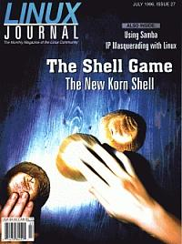

Shutdown Archive web server
Search:
Linux Journal
Issue #27/July 1996

Features
IP Masquerading with Linux
by Chris Kostick
How to enable and configure IP masquerading, also known as Network Address Translation, for Linux.
Understanding Red Hat Run Levels
by Mark F. Komarinski
How to easily add to or modify the existing subsystems of Red Hat distributions of Linux.
Filters: Doing it Your Way
by Malcolm Murphy
A look at several of the more flexible filters, programs that read some input, perform some operation on it, and write the altered data as output.
The New Korn Shell
by David G. Korn, Charles J. Northrup, and Jeffery Korn
ksh93, the latest major revision of the Korn Shell language, provides an alternative to Tcl and Perl.
News and Articles
Samba in the Home and Office
by Peter Kelly
Linux makes a great server for any computer network.
Maceater
A true story; Linux pings connectivity to an office of Apple computers.
by Jonathan Gross
A true story; Linux pings connectivity to an office of Apple computers. i
Object Databases
by Gregory A. Meinke
Not just for CAD/CAM Anymore
Serving Two Masters
by Michael K. Johnson
Getting Linux and Windows 95 to coexist
Basic fvwm Configuration
by John M. Fisk
Tips for using fvwm, an X-Windows manager
Introducing HyperNews
by David Alan Black
Combining the functions of Usenet and the WWW
Columns
Letters to the Editor
Stop the Presses
New Products
Directories & References
Consultants Directory
Upcoming Events
Archive Index
Shutdown Archive web server
Search:
Copyright © 1994 - 2018
Linux Journal
. All rights reserved.